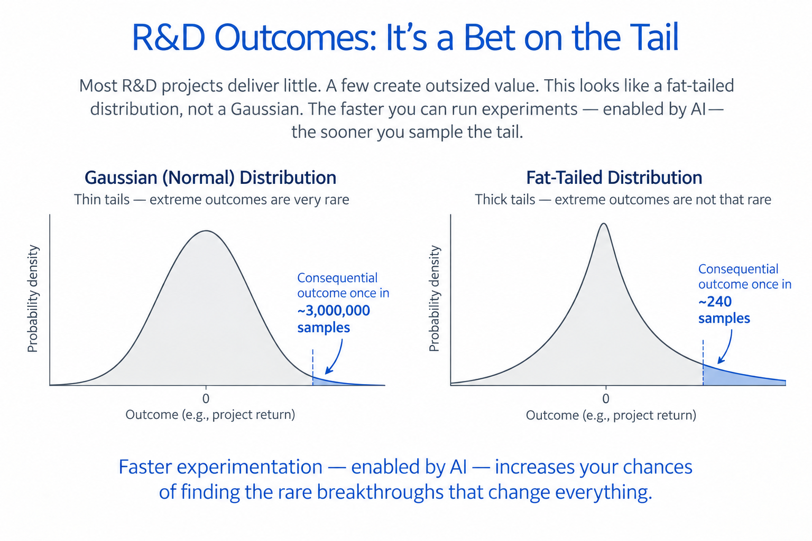
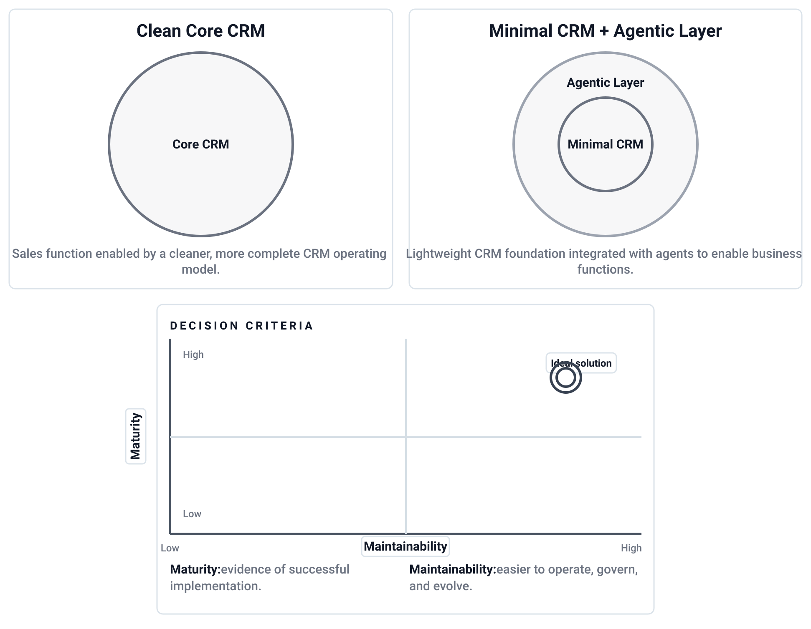

AI, Fat Tails, and the Economics of R&D
R&D as a sampling problem, fat-tailed innovation returns, and how AI changes the economics of experimentation.

R&D as a sampling problem, fat-tailed innovation returns, and how AI changes the economics of experimentation.

A practical lens on CRM, ERP integration, governed data, AI assistants, and manufacturing adoption.